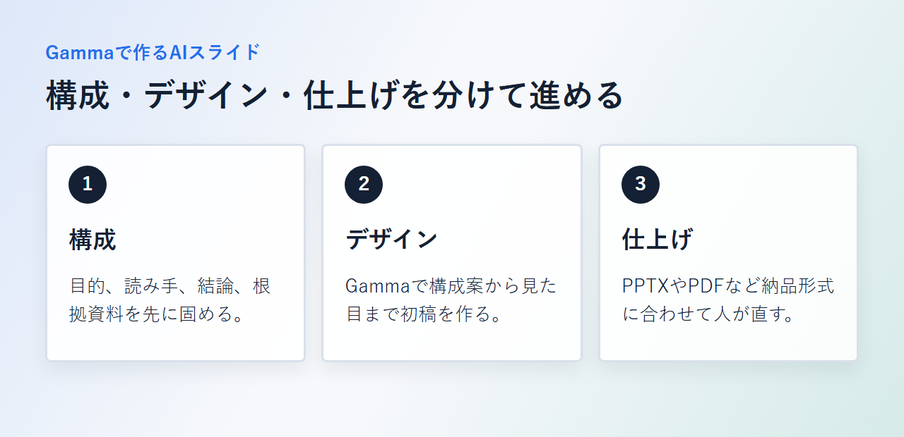
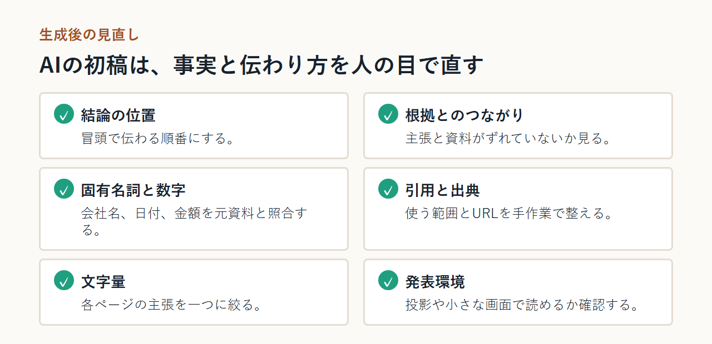
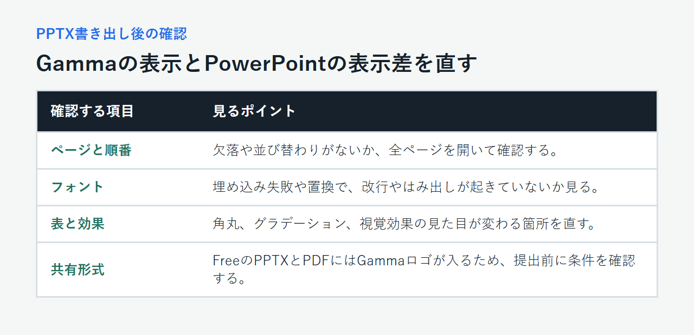

AIでスライドを自動作成する方法｜Gammaで資料を作る手順と直し方
AIにテーマを渡しただけでは、そのまま会議や提案で使えるスライドにならないことがあります。文章は整っていても結論が遅い、元資料と数字が違う、PowerPointへ移したらフォントが変わるといった手直しが残るためです。
遠回りを避けるには、作業を「構成」「デザイン」「仕上げ」に分けます。目的と素材を人が用意し、Gammaで初稿を作ったら、納品形式に合わせて最終確認します。Gammaは編集部で契約していないため、以下は公式情報に基づく説明です。
カード不要のFreeと円建ての有料プラン、AIクレジットや書き出し機能の違いを確認できます。
結論：AIスライドは構成・デザイン・仕上げの3段階で作る
AIスライドは、目的と素材を固めて構成を作り、Gammaでデザインし、納品形式に合わせて仕上げます。PPTXで渡すならPowerPointで表示を確認し、共有リンクやPDFで完結するならGamma上で事実と見た目を整えます。

構成はAIに任せても、目的と読み手は人が決める
AIには、箇条書きの整理や長文の要約、章立ての案出しを任せられます。一方、「誰が読むのか」「読後に何を決めてもらうのか」「最も伝えたい結論は何か」は人が決めます。この三点が、生成後の構成を残すか直すかの基準です。
デザインはGammaで作り、PPTX出力後に確認する
Gammaは、日本語のプロンプトや手元の資料から、構成とデザインをまとめて生成できるAIプレゼンツールです。アプリのUIは日本語へ切り替えられ、FreeでもPPTXへ書き出せます。
ただし、Gamma上の表示とPowerPoint上の表示が完全に同じとは限りません。最終成果物がPPTXなら、出力後の確認までを制作工程に含めます。
Freeの内容と現行プランを確認しておくと、ロゴの有無やクレジットの条件が事前に分かります。
自動作成を始める前に、目的と素材を揃える
入力前に「相手」「目的」「結論」と根拠資料を揃えることが、生成後の修正を減らす近道です。不要な個人情報、社外秘、利用権限が不明な画像や文章は入れません。
誰に何を決めてもらう資料かを1文にする
まず、資料の目的を「経営会議で新しい顧客管理ツールの試験導入を承認してもらう」のような一文にします。そのうえで、AIへ渡すメモを次の順で揃えます。
- 読み手の役職や前提知識
- 読後に決めてほしいこと
- 最初に伝える結論
- 必要なページ数の目安
- 堅め、簡潔、親しみやすいなどのトーン
メモ・Word・PDF・URLから使う情報を選ぶ
会議メモ、Word、PDF、既存のPPTX、参照先のURLから、結論を支える情報を選びます。「必ず使う事実」「参考にする説明」「使わない情報」に分け、古い数値と重複した説明を外しておくと、生成後に元資料と照合できます。
機密情報と引用素材を入力前に確認する
顧客名、個人情報、未公開の業績、契約書の内容は、社内の生成AI利用ルールと資料の機密区分を確認してから扱います。個人向けワークスペース（Free・Plus・Pro・Ultra）は、入力コンテンツをAI機能の改善に使う設定が既定で有効ですが、Data Controlsからオプトアウトできます。Team・Business・Enterpriseのワークスペースは学習対象から自動的に除外されます。機密資料を扱う場合は、手動で設定を変える運用で足りるか、組織向けワークスペースが必要かを先に決めます。
画像や文章を再利用するときは、社内資料だから自由に使えるとは限りません。利用許諾、引用の範囲、出典の表示方法を確かめ、権利が不明な素材は入力候補から外します。
どこまでAIに任せるかで使う方法を選ぶ
任せたい範囲によって、選ぶツールは変わります。構成だけなら対話型AI、構成からデザインまでならGamma、手作業での仕上げを重視するならCanva、自動レイアウトの別案ならBeautiful.aiが候補です。本稿では、Gammaで初稿を作る方法へ進みます。
ChatGPTなどで構成だけ作り、既存ソフトで仕上げる
ChatGPT、Gemini、Claude、Microsoft Copilotに、「各ページのタイトル、主張、根拠」をテキストで出してもらいます。それを社内のPowerPointテンプレートへ移す方法です。既存のデザイン規定を優先したい場合に合います。
Gammaで構成とデザインをまとめて作る
Gammaでは、プロンプト、貼り付けたメモ、添付資料をもとに、構成案からスライドの見た目までまとめて作れます。生成前のプランで結論、並び順、ページ数、トーンを直してからデザインへ進みます。
CanvaやBeautiful.aiを補助候補にする条件
Canvaは日本語UIと常設の無料プランがあり、PPTXへ書き出せます。プレゼン以外の画像や動画も同じ場所で作り、細部を手で整えたい場合の候補です。
Beautiful.aiは自動レイアウトを別案として比べたい場合に検討できます。常設の無料プランではなく、Pro／Teamの14日間トライアルはカード登録が必要で、期限内に解約しなければ自動課金されます。公式の日本語UIは確認できず、編集可能なPowerPoint書き出しはPro・Team・Enterpriseが対象です。
Gammaでスライドを自動作成する手順
Gammaでは、作りたい資料を入力し、目的や読み手に関する質問へ答え、生成前のプランを直してから初稿を作ります。あとから直す手間を減らすなら、デザインを生成する前に話の順序を固めておきます。
アカウントを作り、プロンプトや資料を入力する
アカウントを作成してダッシュボードから新規作成を始めます。短い企画ならプロンプト、本文があるならメモの貼り付け、根拠資料がまとまっているならファイル添付を選び、準備した目的メモを先頭に置きます。
[画像を挿入: Gammaの作成画面]
質問に答え、生成前のプランを確認する
Gammaに読み手、目的、重視点などを尋ねられたら、元資料に沿って回答します。生成前のプランでは、結論の位置、根拠とのつながり、不要な章、ページ数、トーンを確認し、元資料にない事例や数値を削除します。
テーマを選び、初稿を生成する
構成が固まったら、用途に合うテーマと画像の方針を選んで生成します。初稿では話の流れを先に見ます。順序を大きく変えるときはGammaに指示し、固有名詞や数値は手作業で直します。
カードなしで始められるFreeと、有料プランで増えるクレジットや利用条件を確認できます。
生成したスライドを人の目で直す
初稿ができたら、結論の位置、根拠、事実、各ページの情報量を確認します。大きく直す部分はAIに指示し、固有名詞、数値、引用、最終表現は元資料と照合して手で直します。

結論と根拠の順番を整える
資料全体が「課題、結論、根拠、次の行動」の順につながっているかを読み直します。背景説明が長ければ、Gammaへ「結論を冒頭へ移し、重複する説明をまとめる」と指示し、不要なページを先に削ります。
事実・数字・引用元を元資料と照らす
会社名、商品名、日付、金額、割合、引用文を元資料と照合し、条件や対象期間まで確認します。固有名詞、社内用語、引用の範囲、出典URLは手作業で直し、確認できない数字は削除します。
文字量・画像・配色を発表環境に合わせる
各ページの主張を一つに絞り、画像は理解を助けるものだけ残します。会議室で投影するなら文字の大きさとコントラストを、オンラインで共有するなら小さな画面での可読性を確かめます。ブランド色やロゴは社内ガイドに合わせます。
PowerPointに書き出し、表示の違いを直す
GammaからPPTXを書き出したら、PowerPointで全ページを開き、フォント、表、特殊効果、スピーカーノートを確認します。Googleスライドへ移す場合は、埋め込みフォントが置き換わらないかも確かめます。
共有またはメニューからPPTXを書き出す
Gammaの共有または書き出しメニューからPowerPoint形式を選び、必要なスライドをPPTXとして保存します。Freeを含む全プランでPPTX出力を利用できますが、Freeから書き出したファイルにはGammaのロゴが入ります。
受け渡し前に、ページの欠落と並び順を確認します。
フォント・表・特殊効果・ノートを確認する
GammaはテーマのフォントをPPTXへ埋め込みます。ただし、フォントの取得に失敗した場合やPowerPoint側が対応していない場合は、代替フォントになることがあります。タイトルの改行、本文のはみ出し、図形との重なりを全ページで確認します。
表は編集可能な状態で出力される一方、角丸がPowerPointでは角になるなど、見た目が変わる箇所があります。グラデーションや一部の視覚効果、画像の解像度、リンク、スピーカーノートも確認します。

Googleスライドへ移す場合はフォント置換に注意する
Googleスライドは、PPTXに埋め込まれたフォントをそのまま使わない場合があります。アップロード後にタイトルや本文のフォントが置き換わったら、文字サイズ、改行、行間、図形との位置関係を見直します。
PowerPointとGoogleスライドの両方で配布するなら、両方を開いて最終確認します。
無料版の範囲と、作れないときの対処
GammaのFreeはカード不要で始められ、PPTXへ出力できますが、AIクレジットは毎月補充されず、書き出したPPTXとPDFにはロゴが入ります。作成できないときは、入力内容、残りクレジット、出力先の違いを順に切り分けます。
FreeでもPPTXへ書き出せるがロゴが入る
Freeは￥0でカード登録が不要、登録時に400クレジットが付与されます。初回のCreate with AIジェネレーターは1プロンプト最大10枚ですが、Agentによる追加生成にはこの10枚の固定上限は適用されません。PDF、PPTX、PNG、Googleスライドへの書き出しも可能です。
Gammaに従来型の有料機能トライアルはなく、Freeで試します。400クレジットは毎月補充されず、Freeから出力したPPTXとPDFにはロゴが入ります。単発の社内試作ならFree、ロゴなしの社外提出や継続的な生成ならPlus以上が目安です。Plusは月払い￥1,800、年払いは1ユーザーあたり月換算￥1,440です。
クレジット切れ、出力違い、情報不足を切り分ける
生成できないときは残りクレジットを確認します。Freeは自動補充がないため、紹介でクレジットを得るか、有料プランへ移ります。生成内容が意図と違うなら、生成前のプランを見直します。PPTXだけ見た目が違うなら、フォントや特殊効果の確認へ戻ります。
日本語UIと日本語ヘルプを使って設定を確認する
GammaはプロフィールのLanguage SettingsからUIを日本語へ切り替えられ、日本語で資料を生成できます。日本語版ヘルプもありますが、問い合わせ窓口が日本語で回答するかは明記されていません。
Freeのクレジット、ロゴ、円建ての各プランを確認できます。
まとめ：AIの初稿を人が直して1本を完成させる
まず目的と素材を揃え、Gammaの生成前プランを確認して、最初の1本を作ってみましょう。初稿の事実を照合し、納品形式に合わせて表示を整えると、どこを直すべきかが明確になります。
素材を揃え、Gammaで作り、PowerPointで確認する
読み手、読後の行動、結論、根拠資料を一枚のメモにまとめ、生成前のプランで順番を直してから初稿を作ります。数字と引用を照合し、PPTXで渡す場合だけPowerPointで全ページを確認します。共有リンクやPDFで完結するなら、Gamma上の最終表示を整えれば十分です。
無料枠と現行プランを確認し、まずは公開情報だけの資料で流れを試せます。
比較や料金の疑問は関連するnoteで深掘りする
Gammaの登録方法、料金、日本語対応を先に知りたい場合や、他のAIプレゼン作成ツールも比べたい場合は、目的に合うテーマから読み進めてください。
もっと詳しく比較したい方へ
- Gammaの良い評判と注意点を確認したい方へ：https://note.com/saas_serivce/n/n0c6e7c17d004